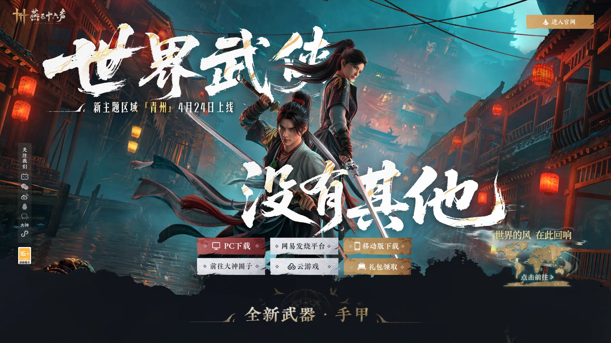
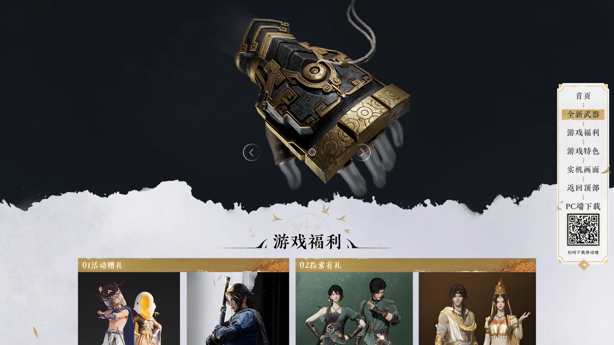
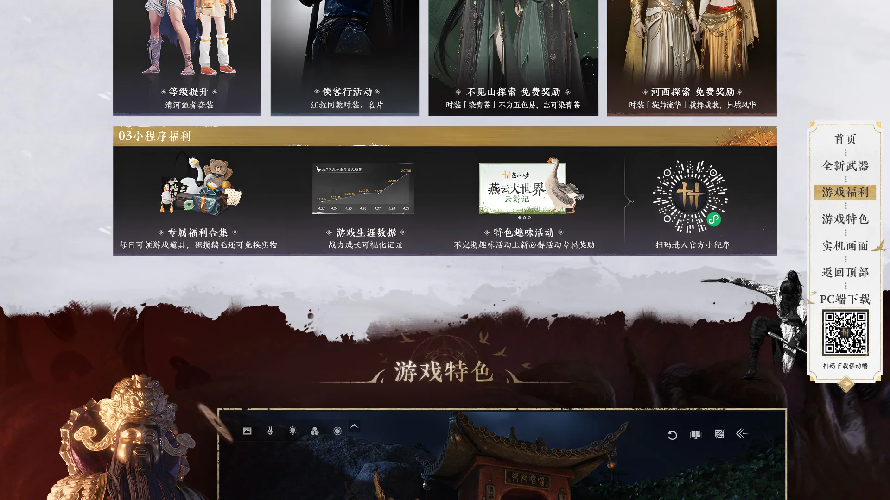
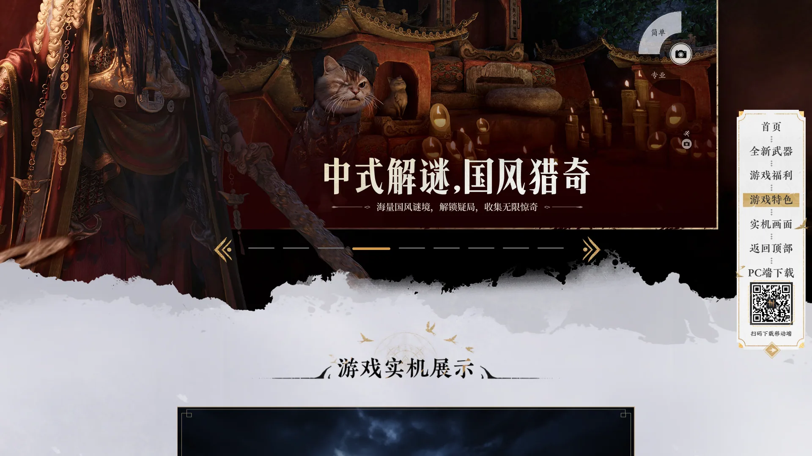
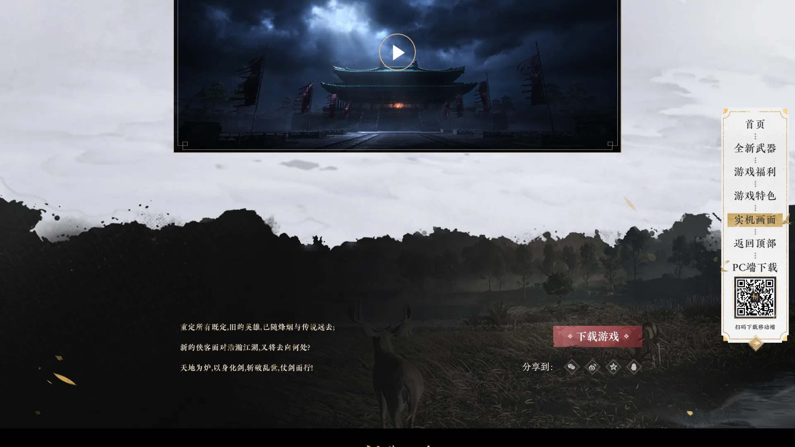
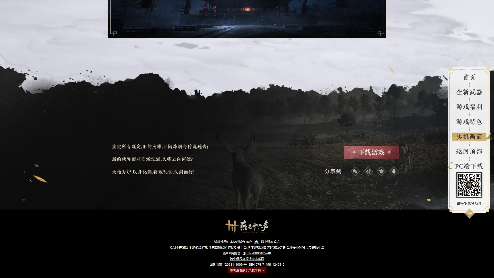

开放世界武侠题材作品，强调国风写实、江湖探索与多人生态。





想象一片从燕云十六州残雪一路铺到江南桃花的北宋山河——北方边塞关隘上还残留着五代战乱的狼烟、汴梁朱雀门外瓦舍勾栏的灯火彻夜不熄、江南水乡的乌篷船在烟雨里慢慢摇过。网易用 4K 写实+四季轮换做出了一张有真实考据的北宋活地图：建筑遵循《营造法式》、服饰参照《清明上河图》、官制对照宋史。这不是仙侠玄幻——这是你能查到史料的北宋大地，每一块青砖黛瓦都来自真实文物。
你是江湖行者——但身份完全自由。你可以选择仗剑天涯当侠客、精雕细琢做匠人、走南闯北做商人、卖艺为生当乐师、悬壶济世做医者。这不是固定主角——这是你来书写自己的江湖故事。剧情围绕北宋初年的边境冲突、江湖恩怨、市井百态展开——你可能今天在朱雀门外做生意，明天就接到江湖告急赶赴雁门关。江湖二字的真正含义：不是打打杀杀，是人情世故、是市井烟火、是侠骨柔情。
那次你在汴梁茶馆听书人讲完一段燕云旧事的瞬间，瓦舍勾栏的灯火和说书人惊堂木的声响让人想起《水浒传》第一次在你脑子里活过来；那场你在雁门关外用真实宋代剑法拆解武林高手起手式的战斗，动作捕捉的真武术让国产武侠第一次有了不输鬼泣的招式重量；那段你换上匠人身份打了一把祖传腰刀的桥段——身份自由切换让你看到的不是任务列表，是一段你能用北宋人视角过完的人生。这不是一个关于救世界的故事，是一个关于「江湖到底是什么」的故事——汴梁的夜市灯火已经亮了，今天你想去哪里？
北宋写实山河 × 国风武侠，是网易把4K 写实+四季轮换的北宋大地（建筑/服饰/官制都对得上历史考据）和真实宋代武术 mocap+少量奇幻内力反直觉地缝合在国产开放世界品类的混血美学。底色是《清明上河图》式的市井烟火——青砖黛瓦、瓦舍勾栏、夜市灯火；变异在于江湖行者可在侠客/匠人/商人/乐师等身份间自由切换。色彩锁定水墨青黛 + 汴梁朱红 + 塞北雪白三色组合。整体调性介于《卧虎藏龙》的国风山水和《清明上河图》的市井写实之间。
国风武侠的视觉化跨越了三十多年。1957 年金庸开始连载《射雕英雄传》，奠定了现代武侠小说的世界观底色。1983 年TVB 版《射雕英雄传》把武侠搬上电视，定义了一代人的江湖想象。2000 年李安《卧虎藏龙》把国风武侠推上奥斯卡——竹林对决+水墨山水成为武侠电影的视觉巅峰。2002 年张艺谋《英雄》延续了大场面国风美学。2009 年《剑侠情缘 3》定义了端游武侠的视觉范式。2015 年《古剑奇谭》系列推动了仙侠美学。2024 年《燕云十六声》正式公测——网易用 4K 写实+《营造法式》考据+真实武术 mocap 做出了国产武侠开放世界的最严肃尝试，证明国风也能扛起 3A 级开放世界的工业上限。
基于体验清单 · 审美偏好 · IP故事三维度综合选出